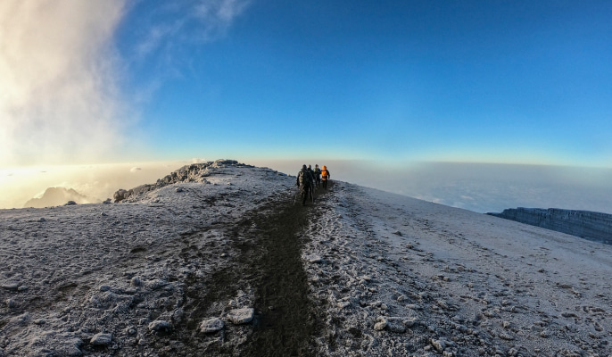
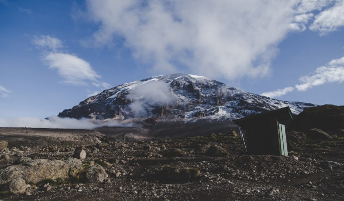
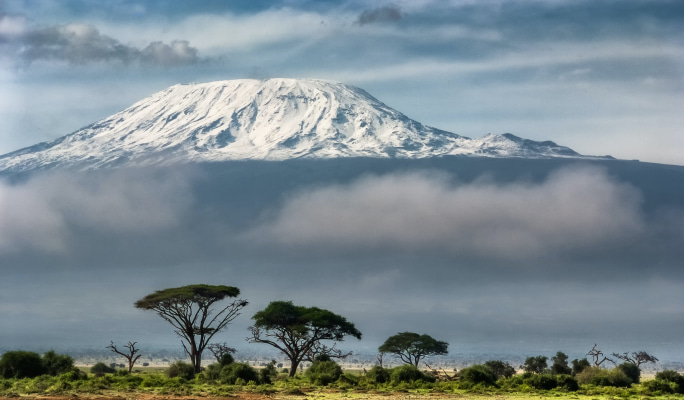
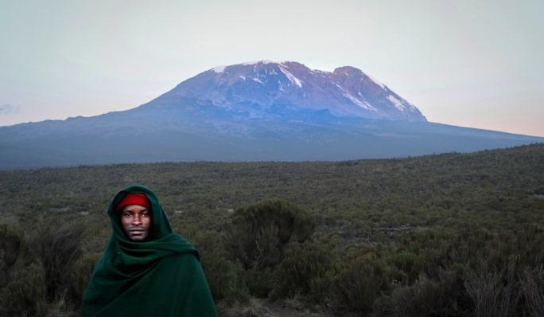
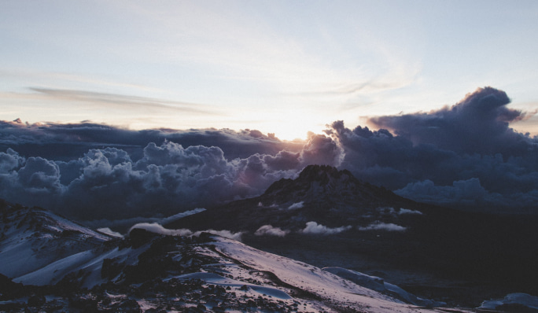

-
email us
gooddeeds_travel@outlook.com -
phone
+255 752 030 338
-
-
We always aim to reply within 24 hours.
Mount Kilimanjaro is a snow-capped peak rising above the savannah of Eastern Africa. With a summit of 19,341feet (5,895meters) from sea level is Africa's tallest mountain.
The etymology of the name Kilimanjaro is still a mystery, several theories exist about the meaning and origin of the name. .
Book the tourThere are six routes officially sanctioned for climbing Kilimanjaro and two routes used for descent. These are; Machame, Marangu, Rongai, Lemosho, Umbwe, Shira and Mweka. The journey from the gate to the peak is like travelling from the equator to Antarctica in a matter of days. Clearest and warmest conditions from December to February, but also dry (and colder) from July -September
What is the best route to climb Kilimanjaro : Kilimanjaro has six well known routes and each route varies not only in length, time, cost and scenery but also has different difficult levels and different success rate. The most important decision to make as a climber is selecting the Kilimanjaro climb route. Which route up to Mount Kilimanjaro is good for you depends on a few factors: time and the budget, previous hiking/trekking experience and body fitness, time of the year and personal preference.
Commonly known as the 'Coca-Cola' route; the route approaches Kilimanjaro from the southeast. It is the oldest, most established route and the most popular route to the summit of Kilimanjaro. The typical duration is either 5/6 days depending upon whether you chose to spend an extra day for acclimatization to the attitude. This is the only route that offers sleeping huts in dormitory-style.
However please remember that all our programs are flexible and tailored to the individual groups so please let us know if you would like to make any changes.
Detailed information about the tour day by day
Distance: 12km
Hiking time: 5hrs
Habitat: Rainforest
On arrival allow 1-2hours at the park headquarters at Marangu gate for registration and payment fees. It is recommended that you start this route in the morning, because this allows the leisurely walk to Mandara, avoiding the rain showers that sometimes fall in the afternoon. From the gate, you cleared ridge trails, formerly a vehicle track to Mandara Hut. The cleared trail is the fastest way to Mandara but opportunities to see wildlife or enjoy the forest are limited due to the heavy foot traffic. After a 6hours walk, you will reach the Horombo Hut where you will have dinner and rest.
Distance: 15km
Hiking time: 6hrs
Habitat: Moorland
From Mandara Huts the trails pass through a short stretch of forest and skirt the base of Maundi Crater, crosses a meadow and a wooded stream, then emerge into grasslands. It is worth the short detour to scramble up to the rim of Maundi Crater for the superb view of the mountain and its surroundings. The trails cross numerous moorland ravines before ending at Horombo Hut, which is set in a rocky valley with a fine stand of groundsels. Dinner and rest at the campsite in the evening.
Distance: Optional 4.5hrs
Hiking time: Optional
Hike Past Zebra Rocks to Assist with Acclimatization
From Horombo Hut there are two trails to the saddle. Horombo hut is a cluster of huts perched on a small plateau, with structures similar to Mandara, but with a total capacity of 120 climbers! The atmosphere at this stop is exciting; you will meet many people from all around the world all trying to reach the summit or who have already conquered the mighty mountain. This extra day and night are for additional acclimatization. We offer an additional walk towards the Mawenzi hut, passing the Zebra Rocks on the way (about 3 hours up and 1.5 hours down), to further assist with the process of acclimatization. Your day will end with an evening meal and rest at the campsite.
Distance: 15km
Hiking time:6hrs
Habitat: Alpine
In the morning, I continued to trek through the alpine desert habitat. From Horombo there are two trails to the "Saddle" (which refers to the area located between the peaks of Mawenzi and Kibo). There is an upper route (right hand fork) and a lower route (left-hand fork) to choose from. The upper route (right-hand fork) will be very familiar, as you will have climbed most of it the previous day towards Mawenzi hut. It is very stony and eroded. The recommended lower route (left-hand fork) is much easier and nearly an hour shorter. From Kibo hut, the summit is only 1195 m above you and you will make your final ascent the same night.
Distance: 6km ascent and further 21km descent
Hiking time: 8hrs to reach Uhuru peak and another 6hrs to descend to Horombos
Habitat: Stone scree and Ice-capped summit
On arrival allow 1-2hours at the park headquarters at Marangu gate for registration and payment fees. It is recommended that you start this route in the morning, because this allows the leisurely walk to Mandara, avoiding the rain showers that sometimes fall in the afternoon. From the gate, you cleared ridge trails, formerly a vehicle track to Mandara Hut. The cleared trail is the fastest way to Mandara but opportunities to see wildlife or enjoy the forest are limited due to the heavy foot traffic. After a 6hours walk, you will reach the Horombo Hut where you will have dinner and rest.
Distance: 27km
Hiking time: 6hrs
Habitat: Forest
Descend from Horombo Hut you can easily make it to Mandara Hut by lunchtime and continue to the park gate and Marangu in the afternoon.
Persons: |
Price 6 DAYS: |
Price 5 DAYS: |
|---|---|---|
1 pax |
2252 $ |
1880 $ |
2-4 pax |
1966 $ |
1628 $ |
5-8 pax |
1741 $ |
1550 $ |
9-11 pax |
1709 $ |
1375 $ |
12+ pax |
1688 $ |
1265 $ |
Some call this the most beautiful route up Kilimanjaro.
Climbing Kilimanjaro on the Machame Route is considered to be more difficult than on the Marangu route or Rongai route. It is considered difficult, but not technically difficult. Mostly it is a long and often steeper trek. It covers more ground and involves more ups and downs. It wears you out more, takes more energy, not more skills. BUT it offers much better ACCLIMATIZATION!
Some people are worried about climbing the Barranco wall. Do not worry. It’s not a cliff face and it’s not a climb. It is mostly a very steep path that requires you to use your hands now and then with a bit of scramble in a couple of places.
Detailed information about the tour day by day
Distance: 18km
Hiking time: 7hrs
Habitat: Mountain forest
Drive from town to Machame gate via Machame village. After registering at the gate you will begin by entering the rainforest. Living up to its name, there is a strong possibility of rain in the forest, which will transform the trail into a very soggy, muddy and slippery experience. You will arrive at the Machame campsite in the afternoon for dinner and rest.
Distance: 9km
Hiking time: 6hrs
Habitat: Moorland
This will be a climb for an hour or so to the top of the forest and then for 2 hours at a gentler gradient through the moorland zone. After a short lunch and rest, you will continue up a rocky ridge onto the stunning Shira plateau, due west of Kibo, from which you will be able to see the breathtaking glaciers. After a short hike, you will reach the Shira campsite at 3,840m. Dinner and rest at the campsite.
Distance: 15km
Hiking time: 7hrs
Habitat: Semi-desert
The route now turns east into a semi-desert and rocky landscape surrounding Lava Tower. Before lunch, you will climb a rocky scree path to the Lava Tower (4630m). This first part of the day’s hike can take up to 5 hours. This will probably be your hardest day so far and some climbers may begin to feel the altitude. However, our experienced team will coach you through the symptoms and provide you with all the advice and support you need.
After lunch break by the Lava Tower, you’ll descent again by almost 680m towards the Barranco campsite whilst it may seem illogical to be going down at this point, you will quickly appreciate its true acclimatization benefit. This descent to Barranco camp takes about 2 hours, bringing the day’s hike to a total of about 7 hours. It’s a great opportunity to capture some beautiful memorable photographs of the Western Breach and Breach Wall. At this sit of the camp, you will be able to have a rest and watch the sunset while waiting for evening dinner
Distance: 7km
Hiking time: 4hrs
Habitat: Alpine desert
This day you will be crossing the hardest part of this route, the Great Barranco Wall. Whilst initially an imposing site, its climb is invariably easier than anticipated. You will quickly appreciate how beautiful the mighty Kilimanjaro is when you reach the bottom of the Heim Glacier. You will then head down to the Karanga Valley. This is a short walking day, but we recommend doing a short acclimatization hike to the screen below the glaciers in the afternoon. Evening dinner when you arrive at the campsite.
Distance: 6km
Hiking time: 3-4 hrs
Habitat: Alpine desert
This next day is similarly a short hike (approx. 3-4hrs). You’ll be crossing over the ridges and valleys, and join up with the Mweka route. After another hour or so, you reach Barafu (Swahili for Ice) Hut. This camp gives you a real experience of the icy elements. The camp is exposed to the ever-present gales; the tents are pitched on a narrow, stony ridge. The summit is now only a further 1,345m up and you will make the final ascent the same night.
Distance: 7km to Uhuru peak and further 23km to descent
Hiking time: 8hrs to reach Uhuru Peak and other 7-8hrs to descent to Mweka
Habitat: Stone scree and ice-capped summit
The trek on this day takes approximately 8hours to reach Uhuru Peak and another 7hours to descend to the Mweka campsite. After midnight breakfast around 23:30hours, the trek begins to head in a north-westerly direction and ascend through a heavy screen towards Stella Point on the crater rim. Many climbers find this 6hours walk to the Stella point the most mentally and physically challenging aspect of the climb. At Stella Point (5,685m) your efforts will be rewarded with a short rest and the most magnificent sunrise you are ever likely to see (weather permitting). From Stella Point you will normally encounter snow on ur 2-hour ascent to Uhuru Peak, the highest point in Africa and an achievement you will remember for the rest of your life.
Distance: 15km
Hiking time: 3 hrs
Habitat: Rain forest
After an early and well-deserved breakfast, it is a short 3-hour and scenic hike back to the Mweka Park gate where you will receive your certificates at the gate; for the climbers reached Stella Point (5,685m) are issued with green certificates and ones reached Uhuru Peak (5,895m) receive gold certificates. You will be picked up and brought back to the Lodge for a warm welcome, a cold celebratory drink and a hearty evening meal.
Persons |
Price |
|---|---|
1 pax |
2650 $ |
2-4 pax |
2280 $ |
5-8 pax |
2150 $ |
9-11 pax |
1930 $ |
12+ pax |
1765 $ |
The Rongai Route provides the ascent up Kilimanjaro from the northeastern side of the mountain, along the border between Tanzania and Kenya.
Rongai ascent is almost similar to Marangu. It is one of Kilimanjaro's easiest routes. The climb to the top is gradual and steady. However, unlike Marangu, this route has a low crowd and passes through remote wilderness areas. Due to its connection with Tsavo national park, it is the only route with a big possibility of seeing wildlife in the first days of the hike.
Detailed information about the tour day by day
Distance: 8km
Hiking time: 5hrs
Habitat: Rainforest
The first day on the Rongai route leads initially through cypress plantations then through fairly open country with only two patches of montane forest. Even those forests are nothing like the rainforest on the western and southern slopes. The scenery of the first day may not be that memorable, but the wildlife can be. Birdlife is prolific and you should see some colobus monkeys. You soon should reach the first cave campsite where all the setup should be ready. There is a toilet and a wooden table with benches, but no hut. Water can be found just down the trail below First Cave
Distance: 6,5km
Hiking time: 6hrs
Habitat: Moorland
The trail continues up towards Kibo, passing Second Cave (3450m) en-route, and reaching Kikelwa Caveat about 3600m. As the climb continues the views become more and more spectacular. You will really begin to feel the awe of the mountain. You will spend the night at the 3rd Cave camp (Kikelewa Caves) where you will spend your night.
Distance: 8km
Hiking time: 3-4hrs
Habitat: Moorland
After breakfast you continue to trek, today the hike is short but steep as you climb up the grassy slopes. You are rewarded with splendid views of the wilderness. You will soon leave the vegetation behind as you move towards the Mawenzi Tarn. This is situated below the towering spokes of Mawenzi. Here you will relax and spend the afternoon acclimatizing.
Distance: 8km
Hiking time: 3hrs for extra acclimatization
Habitat: Shrub and Alpine desert
Take it easy on this day to help your body adjust to the altitude and give your legs a break. Be sure to stretch throughout the day to help prepare yourself for the rest of the hike. On this day it is possible to hike along part of the Mawenzi trail to get some added acclimatization on a 2-3hr hike.
Distance: 12-15km
Hiking time: 4-5 hrs
Habitat: Alpine desert
The trek continues today and you will cross the mighty saddle joining Mawenzi and Kibo. After about 4 hours you will reach the Kibo hut, where you will spend the rest of the day preparing for the final ascent. This will begin around midnight.
Distance: 6km ascent and further 21km descent
Hiking time: 8hrs to reach Uhuru peak and other 6hrs to descend to Horombo
Habitat: Stone scree and ice-capped summit
Takes 8hours to reach the Uhuru peak and another 6hours to descend to Horombo Hut. The part leading up towards the Kibo hut is steeper, the air is thin and mostly expected you will experience a lack of oxygen. The path then zigzags up to Gillman’s point (5681m) on the crater rim. Many climbers find this walk the most mentally and physically challenging aspect of the climb. From Stella Point you will normally encounter snow all the way on your 2-hour ascent to Uhuru Peak, the highest point in Africa and an achievement you will remember for the rest of your life. The walk back to Kibo hut from the summit takes about 3 hours. Here you will have a good ear earned but short rest and collect the rest of your gear, before heading down to Horombo hut.
Distance: 27-29km
Hiking time: 6 hrs
Habitat: Rain forest
On this day you will continue a 6-hour descent passing Mandara hut, and down to the Marangu gate. Here you will receive your certificates; the climbers who reached Gillman’s point (5,681m) are issued with green certificates and those who reached Uhuru Peak (5,895m) receive gold certificates. You will be picked up and brought back to the lodge.
Persons |
Price |
|---|---|
1 pax |
2650 $ |
2-4 pax |
2780 $ |
5-8 pax |
2150 $ |
9-11 pax |
1930 $ |
12+ pax |
1765 $ |
Lemosho route is the newer route on Mount Kilimanjaro that approaches from the west. It is a difficult and long route, but one that is favoured by most reputable Kilimanjaro outfitters due to its smaller crowds’ scenic variety and high success rates.
The Lemosho route is one of the few where tourists’ groups maybe be accompanied on the first day by an armed ranger, like the forest around the Lemosho glades are rich in buffalo, elephant and other big game animals which normally enters the mountain forest from the Amboseli national park. Most climbers choose to use 7 days to climb (although 6 days is also possible if you lose the acclimatization day)
Detailed information about the tour day by day
Distance: 10km
Hiking time: 3hrs
Habitat: Mountain forest
This is the most scenic route from the first day to the last. The trails begin north of Shira, also on the western side of the mountain. After registering at the gate you will enter the forest track using a 4WD vehicle to take you to Lemosho glades. Here you will have lunch then continue your walk to the Mti Mkubwa (big tree) campsite. But unlike the Shira route, where the first day you walk on a 4WD road, Lemosho is a narrow wilderness trail right from the beginning, passing through the pristine and remote rainforest with good chances of seeing wildlife.
Distance: 9km
Hiking time: 6.5hrs
Habitat: Moorland
The second day may only be a 4-5hour walk, but it won’t be a short day. The trail is very steep and possibly many breaks on the way are expected. Once you reach the major ridge, you leave the forest behind and enter the moorland with its giant heathers as you work your way up towards the Shira Plateau. There are a couple more steep ridges, offering great views, a well-deserved break and a descent in the valley on the other side. Eventually, after some time, the path flattens out and before you know it you’ll be standing on the edge of the Shira Plateau, Kibo is straight ahead of you, the Shira Ridge to your right and you are overlooking the plateau below.
Hiking time: Hiking time will be a gentle stroll as decided by the group.
Habitat: Plateau
Distance: 15km
Hiking time: 7hrs
Habitat: Semi-desert
The route now turns east into a semi-desert and rocky landscape surrounding Lava Tower. After lunch, you will climb a rocky scree path to the Lava Tower (4630m). This five-hour walk will probably be your hardest day so far and some climbers may begin to feel the altitude. However, our experienced team will coach you through the symptoms and provide you with all the advice and support you need. After lunch, you descend again by almost 680m to the Barranco camping area, whilst it may seem illogical to be going down at this point, you will quickly appreciate its true acclimatization benefit. The camp is situated in a valley below the Breach and Great Barranco Wall, which should provide you with a memorable sunset while you will be waiting for the dinner.
Distance: 13km
Hiking time: 7 hrs
Habitat: Alpine desert
Your day begins by tackling the awesome obstacle of the Great Barranco Wall. Whilst initially an imposing site, its climb is invariably easier than anticipated. You will quickly appreciate how beautiful the mighty Kilimanjaro is when you reach the bottom of the Heim Glacier. You will then head down through the Karanga Valley over the ridges and valleys, and join up with the Mweka route. After another hour or so, you reach Barafu (Swahili for Ice) Hut. This camp gives you a real experience of the icy elements. The camp is exposed to the ever-present gales; the tents are pitched on a narrow, stony ridge. The summit is now only a further 1345m up and you will make the final ascent the same night.
Distance: 7km ascent and further 23km to descent
Hiking time: 8hrs to reach Uhuru Peak and other 7-8hrs to descent to Mweka
Habitat: Stone scree and ice-capped summit
At about 23:30h in the middle of the night, you will be awoken to some tea and biscuits and will make a move into the night. You will head in a north-westerly direction and ascend through a heavy scree towards Stella Point on the crater rim. Many climbers find this 6-hour walk to Stella point the most mentally and physically challenging aspect of the climb. At Stella Point (5685m) your efforts will be rewarded with a short rest and the most magnificent sunrise you are ever likely to see (weather permitting). From Stella Point, you will normally encounter snow all the way on your 2-hour ascent to Uhuru Peak, the highest point in Africa where you will enjoy the magnificent views while taking a lot of time to do the memorable photographs.
The walk back to Barafu from the summit takes about 3 hours. Here you will have a well-earned but short rest and collect the rest of your gear, before heading down to Mweka camp (3,100m). The route is not difficult and will take you down the rock and scree path into the moorland and eventually into the forest. Here you will have the rest, dinner and spend your night.
Distance: 15km
Hiking time: 3 hrs
Habitat: Rain forest
Approximately 3hours ascending back to the gate, where you will receive your certificates; those climbers who reached Stella Point (5,685m) are issued with green certificates and ones who reached Uhuru Peak (5,895m) receive gold certificates as a celebration of their achievement. Later drive back to your lodge for wash up, dinner and rest after a long trek.
Persons |
Price |
|---|---|
1 pax |
3420 $ |
2-4 pax |
3025 $ |
5-8 pax |
2810 $ |
9-11 pax |
2616 $ |
12+ pax |
2413 $ |
This route is the hardest but most spectacular and direct way to reach Uhuru Peak. It follows a forested ridge to the moorlands and then traverses below the southern ice fields to reach the Barafu route which leads to the summit. It is a relatively short, steep and scenic route
Detailed information about the tour day by day
Distance: 10km approximately
Hiking time: 5-7hrs
Habitat: Rainforest
Pick up from the lodge drive from town towards Umbwe gate. After completing the gate registration procedures, the trek starts through the rainforest. There is a strong possibility of rain in the forest, which will transform the trail into a very soggy, muddy and slippery experience. Part of the trails on this day are so steep, they can only be negotiated because the tree routes provide something like steps. The tree roots also serve as handlebars to haul yourselves up where needed. You will have a lunch packed stop about halfway then you will continue to arrive at the camp in the late afternoon. Overnight at the campsite.
Distance: 10km
Hiking time: 5hrs
Habitat: Moorland
The second day is also steep and uphill all the way. The landscapes change rapidly from rainforest to moorland with rocky outcrops and sparse vegetation. The path follows the narrow Umbwe Route ridge until it begins to flatten close to the Barranco Valley. The Barranco Camp (3,950 meters) sits in the valley under the shadow of the Great Barranco wall with Kibo visible in the distance. Dinner and overnight at the campsite.
Distance: 6km
Hiking time: 5-6hrs
Habitat: Moorland
Today you will be having a short day walk and in the late morning, you will start climbing the Barranco wall and reach 4200m for acclimatization and continue crossing ridges and valleys to Karanga campsite for hot lunch. After a delicious lunch, you will have a short rest and another acclimatization of trekking up the scree slopes toward the Southern ice field then you will return to the camp for dinner and overnight stay. You will be having an experienced crew with you to guide you through the symptoms and provide you with all the advice and support you might necessarily need.
Distance: 5km
Hiking time: 4-5
Habitat: Alpine desert
You’ll begin by trekking up to the Barafu ridge. It will be a little tough because of the altitude. On this day the walking hours will be few because the path is steep hence needs a slow walk to avoid fatigue as well as high altitude sickness. You will walk across the alpine desert with the strong and cold wind blowing because there are no trees around as well as getting closer to the Kibo glaciers. On this day you will have an early dinner of around 1700 hours then try to get some precious rest and sleep. until midnight when you push for the summit. Dinner and overnight at the campsite.
Distance: 15km
Hiking time: 10-12 hrs
Habitat: Alpine desert and Ice
Trek up the scree slopes to Stella Point on the crater rim. After a short break at the Stella point, we will then trek for one more hour to the Uhuru peak. After having a moment of having a great view and photographs on the top of the highest peak of Africa, start to descent via Stella point, then little down the scree slopes before finally arriving at Brafu Camp for a short rest of an hour or so, then we continue to descend to Mweka camp for overnight.
Distance: 9km
Hiking time:3-4hrs
Habitat: Montane Forest
Break the tents early after breakfast and start trekking down through the beautiful rainforest. It is a short trek of approximately 3hrs back to the gate where you will be able to receive your certificates as part of the celebration after a successful climb. Those who reached Uhuru Peak will receive gold certificates. You’ll be picked and brought back to the lodge for a warm welcome, a cold drink and a celebratory meal.
Persons |
Price |
|---|---|
1 pax |
2650 $ |
2-4 pax |
2780 $ |
5-8 pax |
2150 $ |
9-11 pax |
1930 $ |
12+ pax |
1765 $ |
This particular safari involves camping at Tarangire, Lake Manyara, Ngorongoro and Serengeti.
Detailed information about the tour day by day
Distance: 5m
Hiking time: 3hrs
Habitat: Rainforest
The northern circuit route begins at Londorossi gate 2100m in the West. The drive from Moshi takes 2hours to the gate, and somehow considered longer from Arusha. All the formalities /registrations with the Kilimanjaro national park authorities will have to be done by the gate before you start your trek then you’ll be driven further up to the trailhead starting point. You will be served your lunch before you arrive at Mti Mkubwa Campsite. On your way you might get luck and encounter some wildlife on your way to the first camp. Dinner will be served when you arrive at the campsite where you’ll spend the night.
Distance: 6km
Hiking time: 4hrs
Habitat: Rainforest
On day two you will spend the first hour trekking through the last section of rainforest path before entering the low alpine moorland zone which follows up onto the Shira Plateau. The trek is relatively short and gradual, ending at Shira Camp 1 (3,610 meters). Dinner and overnight sleep at the campsite.
Distance: 14km
Hiking time: 6-8hrs
Habitat: Rainforest/Low and high alpine
On day three the trek crosses the Shira Plateau from Shira Camp 1 to Shira Camp 2 for lunch. Here nine day trekkers usually spend the night at Shira Camp 2 where they will join trekkers from the Machame Route. But for 8days trekkers will continue with the trek heading east which passes through the ‘Garden of the Senecios’ and then enters the high alpine desert zone, then you will join the northern circuit heading down to Moir Camp at 4,200. Dinner and overnight sleep at the Moir Camp
Distance: 12km
Hiking time: 6-7hrs
Habitat: High alpine
Day four involves a moderately steep climb out of Moir Valley. Trekkers can take a small detour here to climb the summit of Little Lent Hill at 4,375 meters before returning to the Northern Circuit trail. From here the route follows a series of inclines and declines, skirting around the northern slopes of Kibo to Buffalo Camp (4,020 meters).The trek gives great vistas out across the plains that lie north of Kilimanjaro and stretch out to the Kenyan / Tanzanian border. You will arrive at the Buffalo camp at midday where you will be served dinner and overnight sleep.
Distance: 8km
Hiking time: 6-7 hrs
Habitat: High and low alpine
The day five starts with a climb up the Buffalo ridge and down into Porfu Camp where lunch is usually served. The route then continues east around the northern slopes to the Rongai Third Cave at 3,800 meters. The trek is shorter than the day before and by now you should be feeling well acclimated to the altitude. You will arrive at the Third Cave just around mid-afternoon. Meals will be served at the campsite where you will also spend the night.
Distance: 15kn
Hiking time: 5hrs
Habitat: Glacial landform
Day six involves a steady incline up and over the Saddle which sits between the peaks of Kibo and Mawenzi Peak. Trekkers then continue walking south-west up to School Hut (4,800 meters). After arriving at School Hut you will be served an early dinner and then you should get some shut-eye as you will be awoken before midnight to start your summit attempt. You’ll be advised by the guides to prepare your gears before going to bed ready for the early mid night summit trek.
Distance: 4km ascent and 10km descent
Hiking time: 8hrs ascent and 6hrs descent
Habitat: Glacial landform and preceding
You will wake up at midnight around 11:30am for a hot tea and some snacks, then begin the trek towards the steep incline up the slopes of Kibo under the cover of darkness.Your first check-point is Hans Meyer Cave where you will take a short break. The climb steepens as you approach Gilman’s Point (5,681 meters); which will be around 5-6 hours after departing School Hut. Take a moment to enjoy the approaching dawn and incredible view out and across to Mawenzi Peak, but remember you still have 2 hours trekking to reach Uhuru Peak so dig deep for the energy. The slope flattens as you head west around the crater rim and you should arrive at the summit at or just after sunrise. Your stay here will be brief so get as many pictures as you can of the incredible views and surrounding glaciers. You will then retrace your steps back around the crater rim to Stella Point (5,739 meters) where you will turn south and head down the heavily screed slopes of Kibo to Barafu Camp (4,680 meters). Most trekkers take a short break here before continuing down to Millennium Camp (3,950 meters) for your final night on the mountain. In total, you will be trekking for 14-16 hours on day eight so it is important to pace yourself, remain hydrated and keep your blood sugar levels up. You will have rest at the Millenium campsite along with dinner and overnight stay.
Distance: 10km
Hiking time: 3-4 hrs
Habitat: Rainforest zone
The final day is a short hike through the dense montane rainforest from Millennium Camp (3,950 meters)to Mweka Gate (1,640 meters). At the gate you will need to sign-out with the authorities, who will also provide you with your official certificate – a green certificate for those who made it to Gilman’s Point and a gold certificate for those who reached Uhuru Peak.
Persons |
Price |
|---|---|
1 pax |
3420 $ |
2-4 pax |
3000 $ |
5-8 pax |
2800 $ |
9-11 pax |
2660 $ |
12+ pax |
2400 $ |
This is the prominent volcano mountain with an elevation of 4566meters in the Arusha region of northeast Tanzania. Mount Meru is the second highest peak in Tanzania after Mount Kilimanjaro, which is just 60 km away and forms a backdrop to views from the park to the east. Although completely overshadowed by Kilimanjaro and frequently overlooked by many trekkers it is a spectacular volcanic cone with one of East Africa's most scenic and rewarding climbs.
Detailed information about the tour day by day
Hiking time: 4-5hrs
Habitat: Grasslands and Mountain forest
Drive from the lodge to Arusha National park. On arrival at the gate, the registration arrangement will be done before you start the trek up to Mt Meru accompanied by an armed park ranger. Walking through the grasslands towards the acacia forest on the southern route you might spot wildlife animals such as zebras and giraffes grazing on the lush vegetation. Roughly after 2hrs, you will reach the Maia Falls where you can have a break and stretch your legs while enjoying a picnic lunch. Thereafter the trek continues through the fig tree arch-an an unusual tree formation created by the wild fig Ficus Thonningii. The other 2hours will take you up to the Miriakamba Hut for dinner and overnight.
Hiking time: 3-4hrs
Habitat:Rainforest and Moorland
On this day you will continue the trek on wooden steps along the steep track. The shift in altitude brings about a noticeable drop in temperature and walking may seem easier. The low hanging clouds often shroud the rainforest in mist, creating a moody atmosphere in the lush vegetation. Your uphill trek will take you to “Mgongo wa Tembo” (elephant back) at a height of 3,200 m after approximately 2 hours, where you can take in the scenery and rest, before heading onward to Saddle Hut (3,550 m). On the way, while trekking you might find the vegetation changing from rainforest to heather and moorlands. At the saddle camp, you will decide to take a rest or have a one more hour hike to Little Meru to have a great view of Arusha National park and Kilimanjaro about 80km away. Dinner and Overnight at the Saddle Hut.
Hiking time: 10-14hrs
Habitat: Alpine Desert
Shortly after midnight, you will be awakened with a small snack and warm tea, after which you will start your final ascent. Headlamps light your way as you follow the trail through bushland to Rhino Point (3821m). The path becomes more challenging and occasionally climbing will be required. Following the crater rim, you will walk on frozen volcanic ash and rocks, before reaching the summit, Socialist Peak, in about 4-5 hours
Persons |
Price |
|---|---|
1 pax |
2650 $ |
2-4 pax |
2780 $ |
5-8 pax |
2150 $ |
9-11 pax |
1930 $ |
12+ pax |
1765 $ |
Kilimanjaro has six well known routes and each route varies not only in length, time, cost and scenery but also has different difficult levels and different success rate. The most important decision to make as a climber is selecting the Kilimanjaro climb route. Which route up to Mount Kilimanjaro is good for you depends on a few factors: time and the budget, previous hiking/trekking experience and body fitness, time of the year and personal preference.
Altitude sickness, also called Acute Mountain Sickness (AMS), is an illness caused by exposure to the low air pressure; especially low partial pressure of oxygen, which many climbers experience at high altitudes. There are a number of practical steps that you can take to minimize the chances of having to abandon your climb of Kilimanjaro due to the effects of altitude sickness. Theres are numbers of practical steps that you can take to minimize your chances of suffering from sickness on Kilimanjaro:
These are simply a very few useful hints, tips and guidelines that have served me climbing and trekking at Kilimanjaro mountain. Otherwise you should always consult your doctor prior to undertaking expeditions at high altitude.
On a typical day on the mountain, you will be awakened from your tent around 6:30am by your waiter/porter, who will bring you a warm pan of water to wash your face and hands. In the morning have your bags packed before breakfast. Generally breakfast is between 7:30am and 8:00am, and departure from camp is at 9:00am after medical checkup. There is lunch at midday, tea and biscuits around 4pm and dinner at 7pm.
Summit morning is different; full breakfast 11:30pm and start hiking at midnight or sometimes 1am. Meals are served in a mess tent or occasionally outdoors if the weather is nice - complete with chairs, tables, dinnerware and silverware. After you assemble your day pack, you will begin walking around 8:00 AM, while the porters stay behind to clean up the campsite, and pack up the tents and other equipment.
Meals are served in a mess tent or occasionally outdoors if the weather is nice - complete with chairs, tables, dinnerware and silverware. After you assemble your day pack, you will begin walking around 8:00 AM, while the porters stay behind to clean up the campsite, and pack up the tents and other equipment.
You will be amazed at the variety, quality & quantity of the food we serve to you whilst you are on your Mount Kilimanjaro climb. As you are trekking for between 6-9 hours a day (before summit night) you’ll be burning a lot of calories – and as you are at altitude – even more than you would at sea level.
Ensuring that you are well fed – and fully fueled for climbing Kilimanjaro is paramount – so you’ve enough energy to get to the top. On all of our Kilimanjaro climbs you will be fully supported by a team of chefs, and cooking porters who will cater for every dietary requirement and you will have 3 hot cooked meals a day – plus a plentiful supply of water and hot drinks. A team of guides will also be present just to make sure you are well served and fed.
Each day you will be served different menus whilst on the climb and the below is a guideline to what type of food you can expect on Kilimanjaro:
For Mt. Kilimanjaro and Mt. Meru, you’ll definitely need a full range of waterproof cold weather clothing and gear. The list of what to bring varies depending on where you will be trekking. These are somethings to consider
Kilimannjaro has well defined altitudinal vegetation zones. From the base to the summit these are plateau, semi-arid scrub, cultivated , well watered southern slopes, dense cloud forest, open moorland , alpine desert, moss and lichen. These slopes are home to wildlife animals such as elephant, rhino, buffalo, leopard, monkey and eland .Birdlife includes the lammergeyer, scarlet-tufted malachite sunbird as well as various species of sunbirds, the silvery-cheeked hornbill and the rufous-breasted sparrowhawk.
Kilimannjaro has well defined altitudinal vegetation zones. From the base to the summit these are plateau, semi-arid scrub, cultivated , well watered southern slopes, dense cloud forest, open moorland , alpine desert, moss and lichen. These slopes are home to wildlife animals such as elephant, rhino, buffalo, leopard, monkey and eland .Birdlife includes the lammergeyer, scarlet-tufted malachite sunbird as well as various species of sunbirds, the silvery-cheeked hornbill and the rufous-breasted sparrowhawk.
Kilimannjaro has well defined altitudinal vegetation zones. From the base to the summit these are plateau, semi-arid scrub, cultivated , well watered southern slopes, dense cloud forest, open moorland , alpine desert, moss and lichen. These slopes are home to wildlife animals such as elephant, rhino, buffalo, leopard, monkey and eland .Birdlife includes the lammergeyer, scarlet-tufted malachite sunbird as well as various species of sunbirds, the silvery-cheeked hornbill and the rufous-breasted sparrowhawk.
In all of Tanzania mountain’s areas, expect rain at any time of the year and considerably cooler weather than along the coast . Nights especially can be very chilly and a water and a windproof jacket and warm pullover are essential. Particularly on Kilimanjaro, waterproof everything especially your sleeping bag, as things rarely dry on the mountain. Kilimanjaro can be climbed throughout the year but it is worth avoiding the two rainy seasons (late March to mid June and October to beginning of December) when the trails become slippery . Best time to visit should be January to February and September to October when there is usually no cloudy weather.
We always aim to reply within 24 hours.